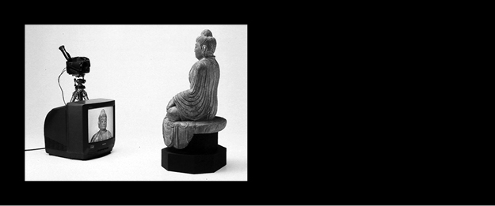

4.1 The Korean Dream
In the 1980s Korea was, as mentioned before, mainly a manufacture country and was known because of its copies of Western products. When the country changed its ideas on copying goods in the 1990s they were determined to become more influential. The country already learned a lot about modern techniques and now started to make its own products, which became the front-runners of technology and slowly Korea became a High-Tech nation. One should think of brands like Samsung, LG, Hyundai and Kia, but also in fashion they became more known with designers like Juun.J and Wooyoungmi (Fig. 16, 17).
Fig 16. - Designer Jung Wook Jun dressing a model backstage at the fashionshow of Juun.J
Fig 17. - Backstage at the fashionshow of
Wooyoungmi, SS 2015
But how did they start to export their own culture? When in 2001 by “accident” the song ‘Honey’ by musician Park Jin-Yeong and several other Korean pop artists became a hit in China, Korean newspapers started to write about this new phenomenon, which is they called ‘The Korean Wave’ or Hallyu30. The Korean Wave is additionally seen as a manifestation of 5,000 years of pent up energy as a result of oppression. This Korean boom was further boosted by the advance of Korean movies but more than anything else Korean pop music, which often incorporates dynamic rhythms, powerful dances and lyrics that felt progressive and rebellious enough to attract the youth. These new adapters are classified as the “Korean Tribes” and are aggressively adopting and mimicking Korean lifestyles ranging from fashion, food and consumption patterns and even to plastic surgery31. The latter has gone so much out of hand that the city of Seoul is now restricting advertisements on plastic surgery because they were fueling an unhealthy obsession with the body image. Under the new regulations metro stations can only allow 20% of the advertisements to be connected to plastic surgery and overly sensational before and after pictures and slogans are going to be banned32 (Fig. 18). The Hallyu was first praised as a pride of “Korean Culture” most likely because nationalistic people felt that Korea finally joined the ranks of advanced nations. This pride is linked to the notions of cultural essentialism and the prevalent of this popularity in other Asian countries stems from family values and Confucian sensibility33.
But is the Korean Pop Culture essentially different from other pop cultures? In cultural and nationalistic discourse it is voiced that Korean culture compared to American and Japanese culture is less violent. Another argument is that it is more popular in Asia is because of anti-Japanese and anti-American sentiments. China is ideologically opposed to America and this is the same with Japan. For Korea this is entirely different, China sees no sense of competitiveness with Korea, which does not say that they disdain Korea, they view Korea as a country to learn from34. And over discourse it’s being mentioned that when China emerges as a new cultural furnace, it will most likely mean East Asia’s emergence from cultural colonialism35. But to counter this cultural colonization Korea should search for something “authentically Korean” instead of copying the homogenous pop culture. One of these options was coined by the television documentary producer Seo Hyeon-cheol, he was convinced that Korean dance music could be a world competitive export item and said that even though Korean dance music was derived from Japan or America, it is inevitably colored by Korean sensibilities during the process of copying. The people who created the so-called Hallyu are not people who create the so-called “high” or traditional “Korean culture”. But mainly it comes from Korean dance music. Seo calls this love of music and dance a “Korean sensibility”36.

Fig 18. - Plastic surgery advertisements at metro stations in Seoul
In 2005 the Samsung Economic Research Institute published a special report on the economic effects of the Hallyu. Entitled “The Korean Wave Sweeps the Globe” the report classifies countries that import Korean pop culture into four stages. The first stage is that of simply enjoying Korean pop culture, this is applied to countries as Egypt, Mexico and Russia. The second stage involves buying related products such as posters, character items, and tours, the countries classified for this stage are Japan, Taiwan and Hong Kong.
The third stage is buying “Made in Korea” products and China and Vietnam are qualified for this stage. The fourth and final stage reflects the development of a general preference for Korean culture itself. According to the report, there are no countries that could be applied for this stage. To accomplish this fourth stage it is suggested by the report that people need to be made interested in Korean culture through “feeling Korean” by increasing the export of Korean food, drinks and lifestyles which contains the essence of Korean aesthetics, emotions, traditions and culture by modelling itself in the rear of “Japonism”. The style that made Japan its existence known to European culture at the end of the nineteenth century. The report added that when the sensibility contained in these contents go beyond “Korean sensibility” to include Asian values such as Neo-Confucian and family values, then it would be more appealing to non-Koreans and in that way South-Korea could build a cultural Silk Road37.
4.2 K-Pop
As specified before, K-Pop or Korean Pop Music is one of the biggest (pop) cultural export products of Korea. Since the late 1990s, K-pop has been regarded as one of the most successful cases among Asian pop music. The danceable rhythms and catchy melody performed by good-looking singers and groups were first swept across East and South-East Asia but later on to other parts of the world as well. These singers and groups are no amateurs but actually have a big organization behind them, a kind of education system. This ‘star manufacturing system’ came up in the early 1990s38 and eventually expanded itself into a specific training and education system. Star aspirants register at an academy as trainees and take the lessons necessary to be a star. After learning applicable skills, the chosen few are entitled to become members of idol groups, usually this would be boy-groups or girl-groups. Later these idol groups would go to the next stage of hard training that mostly begins with living together in a house provided by the company. By this, stars are discovered, educated and exploited through consistent control by the entertainment companies, which on itself is a hard working industry39. Where before the Korean pop stars were a stereotype of pretty boys and girls lip-syncing and dancing on music, by the early 2000s the new type of star had to look more ‘real’ or ‘less artificial’. This was a result of the target audience that moved from teenage girls to women who were in their mid-20s to 30s. This was mainly because these women had a larger buying power. After the Hallyu, K-pop became more popular and the entertainment companies focused themselves on the global market as well. An explanation to this global approach of the music industries could be that they found that ‘Asians’ are everywhere on the globe. Beyond Asia, this music existed as a form of Asian migrants´ culture in America and elsewhere in the West40.
The biggest breakthrough of K-pop occurred in 2012 and was a result of the popularity of the song ‘Gangnam style’ by the Korean rapper PSY. The song is referencing a sort of elite, “Nouveau Riche”, wealthy culture and lifestyle that has sprung up around Gangnam, a small area in Seoul. PSY explained: “Gangnam residents are seen as “good-looking because of plastic surgery, stylish because they can splurge on luxury goods, and slim thanks to yoga and personal trainers. But People who are actually from Gangnam never proclaim that they are – it’s only the posers and wannabes that put on these airs and say that they are “Gangnam Style” – the song is actually poking fun at those kinds of people who are trying so hard to be something that they’re not.”41 ‘Gangnam Style’ might look like it went spontaneously viral on the Internet. Actually it was a precisely executed campaign by the Korean entertainment company behind the song to make a definite breakthrough of K-pop music in the North American and European market42 (Fig. 19, 20).
4.3 Contemporary Korean art
A possibility to grow this “Korean Sensibility” could be through the arts. Arts are a good cultural export product and are completely different from the pop culture. Korean art could create a modern view on traditional “Korean Culture”. Recently Korean artists are mentioned as one of the new tastemakers and history-making headliners in the global art scene43. One of the better
known Korean artists and from one of the first generations of modern Korean art is Nam June Paik. Born in 1932 he is an artist that experienced this whole change in Korea. In the 1950s, during the Korean War, he and his family left their homes and fled to Japan. His art works are mentioned as futurist and he was part of the Fluxus movement that was highly inspired by the composer John Cage. As one of the first artists to work with television and video, transforming both forms of popular media into art. He stressed that electronic media is not sculpture or painting, but a ‘time art’. A prescient theorist whose writings were as visionary as his art, he has been credited with inventing the term ‘electronic superhighway’ and stating that ‘the future is now’. His most famous work is ’TV Buddha (Fig. 21), here Paik brings together the past and present, the old and new, the real and illusory. The Buddha perpetually gazes at the TV screen, on which he sees an image of himself recorded by the closed-circuit camera44.

Fig 21. - Nam June Paik, TV Buddha (1974), Mixed media
The Buddha, the founder and signifier of a doctrine which espouses relinquishment of the ego or petty, individual self, is sat viewing an image of himself on a television screen. Ultimately, the pieces correspond with, represent and reaffirm Buddhist teachings: that external appearances and perceived reality are illusory.
Another artist is photographer Park Sung Jin, born in Seoul but studied painting and photography in New York. Since 2001 he has worked on a series of portraits called ‘Kid Nostalgia’ (Fig. 22, 23), which are portraits of teenagers in Seoul. After spending his 20s in New York he decided to go back to Seoul and was ‘shocked’ by the existing youth culture how everyone looked the same. But also saw the little gemstones that as little rebels don’t fit in with their clothing and looks. These youngsters have different haircuts or dress themselves differently and therefore they are not accepted by society45. The way they reveal themselves as they roam around the periphery of the school system is so raw that there is an ironic beauty to it. There is a sort of imperfect freedom and recklessness to their rebellion and sadness, to their style that the older generation refuses to tolerate. While Park was doing this project, he often thought that he was, in a sense, trying to find his own forgotten roots. Although he found out that it wasn’t so much about finding an “answer”.
Fig 22. - Park Sung Jin, Kid Nostalgia II (2005),Photography
Fig 23. - Park Sung Jin, Kid Nostalgia III (2007),Photography
Most of the artists that are the “new tastemakers” in the art-scene are educated in London or New York at the most renowned schools. By fusing cutting-edge technology and popular trends these artists reflect the disturbing yet celebratory, self-contradictory clashes and divided psyche. They do this by reflecting on topics like K-pop, ancient Confucian values, the latest cosmetic surgery as a possible subject and historical events.
4.4 Korean Graphic Design
The growing focus of Korea on “high” culture also affected the graphic design scene. Thanks to the Hallyu there has been an increase in the number of cultural and social events. The younger generations of designers have the opportunity to explore this growth in the cultural field. These young designers have an ability to look at the real happenings in society and realize that adjustment without questioning has nothing to do with real life. With various social influences, young designers are ready to make their own opinion on finding value in life, rather than just following the mainstream46. This is a reason why more designers who studied abroad but are originally from Korea are coming back to the country.
Fig 24. - Graphic designer, Na Kim
Fig 25. - GRAPHIC, a magazine launched in 2007
Na Kim (Fig. 24) is a graphic designer and founder of GRAPHIC (Fig. 25). After graduating in 2008 from Arnhem’s Werkplaats Typografie, a two-year masters program run under the ArtEZ Institute of the Arts, Kim launched her own studio. She’s won worldwide recognition for her vibrant, stripped-back graphic style, and her work has been exhibited everywhere from Milan to New York. She was one of these designers who moved back to Seoul. Na Kim mentions in an interview that many things are still in process in Korea, this process is not completed yet but there is still enough potential to take the next steps forward. This was also a reason for her to launch GRAPHIC, a magazine that was first published in January 2007. Through this magazine she wanted to explore other trends of graphic design that are different from the mainstream. GRAPHIC is an independent magazine that does not depend upon sponsors or any governmental organizations for financial help but rather aims at more creative and independent journalism by emancipating its own editorship from them. This trend of independent publishing is becoming bigger and bigger and many graphic designers start their own publishing houses.
Spector Press, an independent publishing house from Seoul, is another example. Founders Sulki & Min (Fig. 26, 27) started Spector Press after they gained enough experience in the European graphic design field and wanted to explore this further in Korea by publishing books in their own language. Asking Sulki & Min on the traditional aspects of design in connection to contemporary designers they say that they don’t think the contemporary culture has any strong connection to the country’s history47. Though Korean typeface design has some connection with it as a result of evolvement of Korean type designers by basing fonts on old publications.
Fig 26. - Graphic designer duo, Sulki & Min Choi
Fig 27. - Exhibition poster by Sulki & Min, commissioned by Feminist Artist Network, 2005